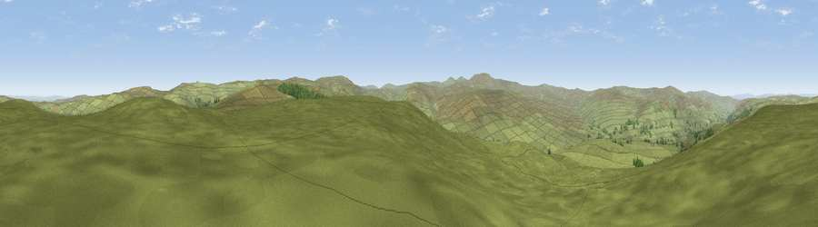

Viewpoint near Garrigill
#7412 in England · top 19% of its area beats it · near GarrigillThe view, rendered

A 360° render of this exact spot computed from the terrain model, tree cover and land cover — summer colours, afternoon light, calibrated against photographs of famous viewpoints. Real trees, hedges and buildings will differ in detail.
The panorama
Grey silhouette: terrain skyline in each direction (720 bearings, Earth curvature and refraction included). Dashed green: skyline with trees (+15 m) and buildings (+8 m) as obstacles. Blue strip: how far the ground is visible on each bearing.
Where the view opens
Wedge length = distance to the farthest visible ground on that bearing (vegetation-aware). Rings at 10, 25 and 50 km.
What fills the view
98% grassland · 2% woodland
Angular shares of the visible panorama (visual magnitude), not map area. Landscape diversity 0.04 (0–1 Shannon).
Key numbers
More beautiful places nearby
The staircase of upgrades: each row has a higher view potential than everything closer. Driving times are estimates from straight-line distance, calibrated against real road routing — check an actual route before setting out.
| Place | Direction | Drive | Score |
|---|---|---|---|
| Viewpoint near Nenthead | ESE · 2 km | ~6 min | 71.4 |
| Dead Stones | SE · 6 km | ~13 min | 72.8 |
| Viewpoint near Allenheads | E · 7 km | ~15 min | 74.6 |
| Grey Nag | WNW · 9 km | ~18 min | 75.7 |
| Viewpoint near Renwick | W · 10 km | ~19 min | 77.0 |
| Cross Fell | SSW · 11 km | ~21 min | 78.7 |
| Viewpoint near Cumrew | WNW · 21 km | ~35 min | 78.8 |
| Barrock Fell | W · 28 km | ~45 min | 81.1 |
54.78734, -2.39222 · source: screening · position refined by local search. Computed location — check access rights before visiting.